Assignment 10
Leaflet Web Map
Host a website on Github and build a web map with Leaflet to display real-time weather radar and alerts from the National Weather Service.
The web development concepts learned with the open-source Leaflet library can be applied to other web mapping libraries, such as the Google Maps JavaScript API and the ArcGIS JavaScript API. Github can be useful beyond web mapping for sharing source code and creating basic websites.
Table of Contents
Finished Example
Data
Aside from a basemap, we will have two layers to show current weather conditions in the United States:
- Weather radar
- Weather alerts
Weather radar
Title: NEXRAD Base Reflectivity Current
Layer type: OGC Web Map Service
Summary: A National Weather Service image product depicting current precipitation derived from a network of radar stations. The web service is provided by Iowa State University Mesonet.
Service URL: https://mesonet.agron.iastate.edu/cgi-bin/wms/nexrad/n0r.cgi
Weather alerts
Title: National Weather Service Active Alerts
Layer type: GeoJSON
Summary: Areas under a weather alert issued by the National Weather Service, such as a tornado warning. See the NWS for details on the API.
Service URL: https://www.weather.gov/documentation/services-web-api#/default/get_alerts_active
Example Basemap
Title: OpenStreetMap
Layer type: Raster tiles
Summary: Crowd-sourced street map. See the details on the OpenStreetMap Wiki.
Service URL: https://{s}.tile.openstreetmap.org/{z}/{x}/{y}.png
Steps
Part 1: Create a website
- Go to github.com/new and sign in to create a repository, which is like a project where you can put folders and files of source code.
a. Name the repositoryyourusername.github.io, whereyourusernameis your Github username shown on the page.
b. SelectPublic.
c. CheckAdd a README file.
d. ClickCreate repository.
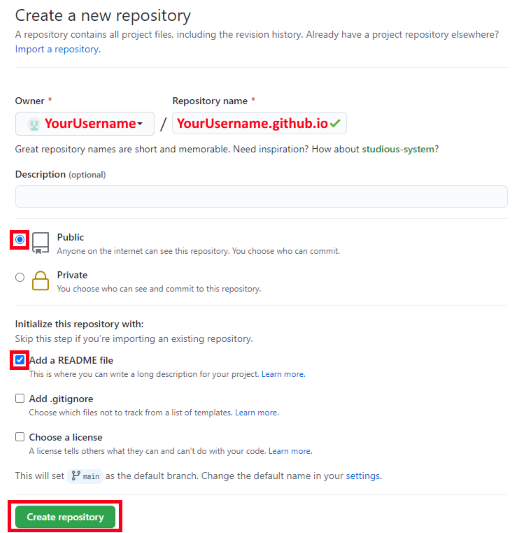 - On the
Codetab for your new repository, clickAdd file>Create new file.
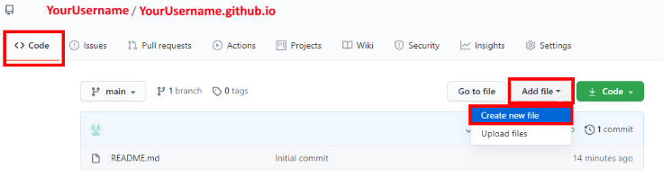 - Type
weather/index.htmland Github will automatically create a folder namedweathercontaining a file namedindex.html. This will be the webpage people see first when they visit the website.
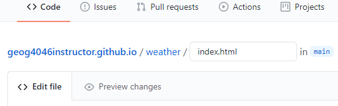 - Still on the
Codetab, underEdit new file, paste the code below for a basic HTML skeleton of the homepage.<!DOCTYPE html> <html lang="en"> <head> <meta charset="utf-8"> <title></title> </head> <body> The content goes here. </body> </html> - We’re going to be making a weather map, so enter an appropriate title between the
titletags. This will appear in browser tabs and search engine results, among other places.<title>Instructor's Weather Map</title>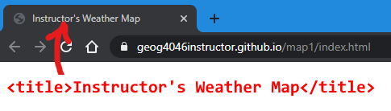
The image illustrates where users will end up seeing your title in the browser. It is not part of the webpage content. - Scroll down the page and click the green button,
Commit new file. This saves the file. Go check out your page at:yourusername.github.io/weather. It should display “The content goes here.”
It can sometimes take a few minutes for changes to become visible on the live website.To return to editing a page at any time, go togithub.com/yourusername, click your repository name, click the folder (weather), click the file name (index.html), then click the pencil icon at the top right of the code panel.
You now have a live website consisting of a single HTML file. In the next parts, we will add more HTML code to the file to prepare it for the web map, then create additional files for CSS and JavaScript.
Part 2: HTML setup
- Continue editing your page,
weather/index.html. We will include two libraries (Leaflet and jQuery) to help build the map, and create an element to draw the map in. First, include the CSS file for Leaflet, which affects the appearance of the map. Under thetitleelement, add these lines:<link href="https://unpkg.com/leaflet@1.7.1/dist/leaflet.css" rel="stylesheet"> <link href="weather.css" rel="stylesheet">This
linkelement tells the user’s browser to download a CSS file from a URL. The first is the Leaflet CSS hosted by unpkg.com, and the other is a file we will create on Github soon calledweather.css. - Between the
bodytags, replace “The content goes here” with adivelement, and give it anidattribute to identify it as the box where the map will eventually be drawn. For now, the page will be blank.<body> <div id="map"></div> </body> - Then, under the
divelement but still within thebody, add the lines:<script src="https://unpkg.com/leaflet@1.7.1/dist/leaflet.js"></script> <script src="https://code.jquery.com/jquery-3.6.0.min.js"></script> <script src="weather.js"></script>These
scripttags tell the browser to download JavaScript files. The first two are libraries:leaflet.jsis the engine of our web map—it is the geographic information system that will understand geographic data and know how to draw it on a map.jquery.jsis a library with various shortcuts to make JavaScript easier to code; we will use it to fetch GeoJSON data from a URL.weather.jswill be our own custom script where we build the weather map.
Commit changes. Go to your website address again to preview it, even though the page will still be blank. At the blank page, open your browser’s developer tools (F12in Chrome). If you click on the Console tab, you should see errors saying thatweather.cssandweather.jscannot be found. That is because we haven’t created them yet.
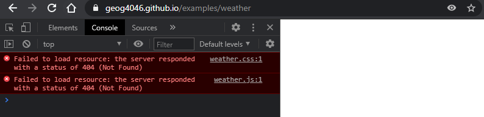
Part 3: CSS setup
- From the editor page, click the
weatherfolder:
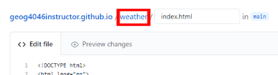 - Then from the
weatherfolder page, clickAdd file>Create new file, and name itweather.css.
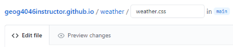 - For the code, paste these lines of CSS to make a full-page map then click
Commit new file.body { padding: 0; margin: 0; } html, body, #map { height: 100%; width: 100%; }
The selector #map references our <div id="map"></div> element in the HTML file. The word used for the ID doesn’t have to be “map”, but it must match in both files.
These CSS styles tell the browser to draw the map at 100% of the browser window size with no spacing (padding, margin) around the edges, i.e., full page.
Part 4: JavaScript setup
- Back at the
weatherfolder, create another new file and name itweather.js. - Paste the following lines to create a map object and basemap. This will tell Leaflet to connect to the tile service at the specified URL, and the tiles will be assembled and displayed in the user’s browser in the
divwith theidofmap:var map = L.map('map').setView([38, -95], 4); var basemapUrl = 'https://{s}.tile.openstreetmap.org/{z}/{x}/{y}.png'; var basemap = L.tileLayer(basemapUrl).addTo(map);You should now have three files in your
weatherfolder and you can preview your website to see if the basemap is working atyourusername.github.io/weather.
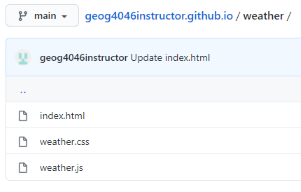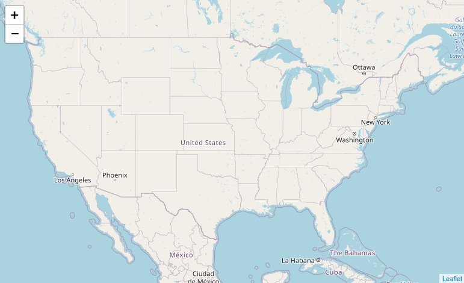
Now that the HTML, CSS, and JavaScript files are set up, we need to work on our JavaScript to add operational layers and popups to complete the weather map. We will not change the HTML and CSS any further.
Part 5: Radar layer
- Add the national precipitation radar layer using these lines in
weather.js. We specify the URL of the web service, the layer name to use from the service, and format it as a transparent image to hide pixels with no precipitation.var radarUrl = 'https://mesonet.agron.iastate.edu/cgi-bin/wms/nexrad/n0r.cgi'; var radarDisplayOptions = { layers: 'nexrad-n0r-900913', format: 'image/png', transparent: true }; var radar = L.tileLayer.wms(radarUrl, radarDisplayOptions).addTo(map);If you preview the map, you should see the weather radar over the basemap, assuming there is precipitation somewhere in the country at the moment.
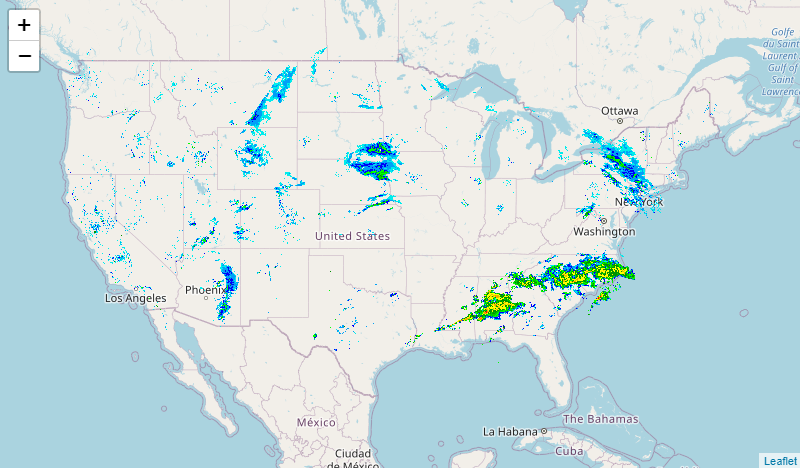
Part 6: Alerts layer
Adding the weather alerts layer will involve more complex code, so let’s do it in small steps.
- Since we included the jQuery library in our HTML file, we can use the jQuery function
getJSONto request current weather alerts from the National Weather Service in JSON format, saved to a variable nameddata. This function does not exist in plain JavaScript, and accomplishing this without jQuery would take some extra code.var weatherAlertsUrl = 'https://api.weather.gov/alerts/active?region_type=land'; $.getJSON(weatherAlertsUrl, function(data) { // add more code here later }); - The code above gets the alert data but doesn’t display it. We need to pass the
datavariable to a Leaflet function to read the GeoJSON features and draw them on the map. Replace// add more code here laterwith:L.geoJSON(data).addTo(map);Now you can
Commit changesand preview your map. You should see polygons (Leaflet’s default is blue) representing areas that have flood watches, thunderstorm warnings, etc.
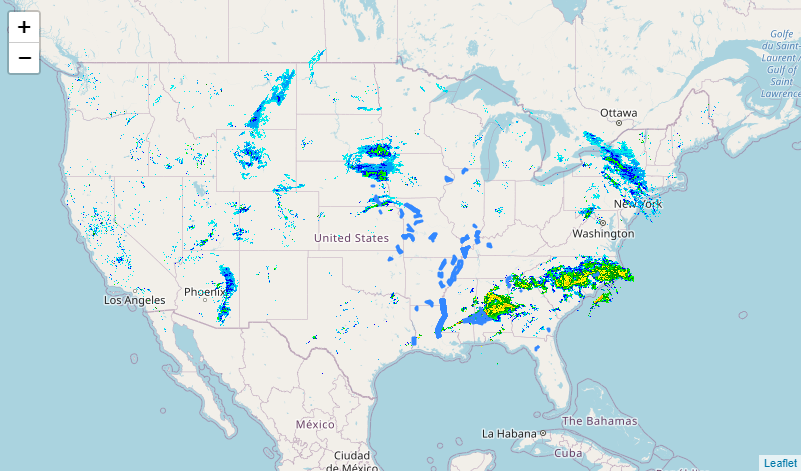 - Let’s add a style to change the polygon color. Instead of only passing the
datavariable to thegeoJSONfunction, we can pass options enclosed in curly brackets{ }. Replace the previous line with the code below, which has been broken up onto multiple lines to make it easier to read:L.geoJSON(data, { style: { color: 'orange' }, // more options go here }).addTo(map);The blue polygons will now be colored orange.
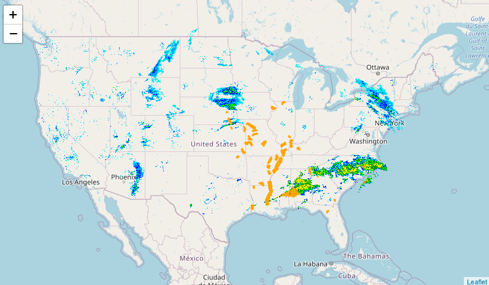 - In addition to the
styleoption, we can add theonEachFeatureoption to tell Leaflet to call a function for every single feature in the layer. In our case, let’s attach a popup to each alert polygon to give details like “Flood Warning in Springfield MO”. Replace// more options go herewith:onEachFeature: function(feature, layer) { layer.bindPopup(feature.properties.headline); }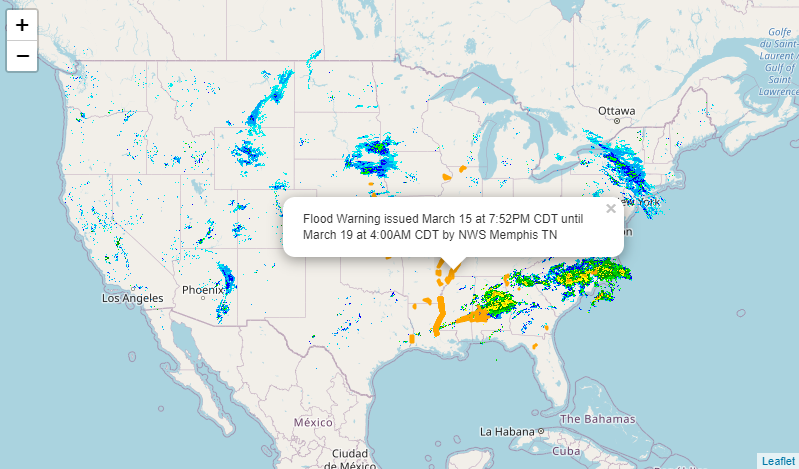
Whatever text or variable is passed to thebindPopupfunction will be printed in the popup when the user clicks a polygon. If we putbindPopup('Hello'), then each popup would just showHello. Instead, we are displaying theheadlineattribute that the National Weather Service includes in their alerts GeoJSON layer. You can view the NWS alerts web service URL in a browser to see the relevant attributes.
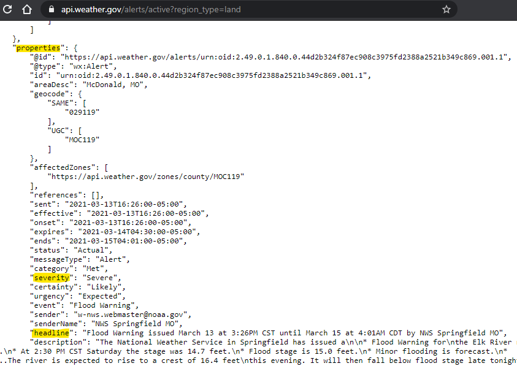
Due to the way Leaflet handles GeoJSON data, attribute values are accessed via the objectfeature.properties. You could show users the longer description instead of the headline by passingfeature.properties.descriptionto thebindPopupfunction. - Finally, it would be nice to display the “severe” alerts in a different color to distinguish them from the watches and advisories. Revisit the
styleoption: instead of specifying a color directly, we can write a function with some logic to determine the color based on an attribute value. This is the equivalent of changing the layer symbology in other GIS software. Replacestyle: { color: 'orange' },with:style: function(feature){ var alertColor = 'orange'; if (feature.properties.severity === 'Severe') alertColor = 'red'; return { color: alertColor }; },That sets the color of alert polygons to orange, but if the alert has a severity of “Severe”, then the color for that polygon will be changed to red.
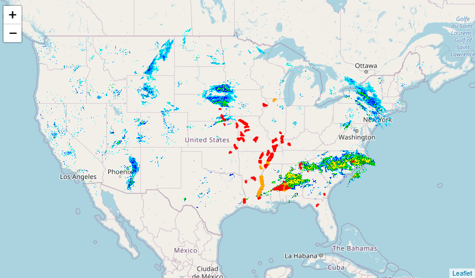
Make sure your map works (yourusername.github.io/weather). If it doesn’t, pressF12to open your browser’s developer tools and look at theConsolefor errors that might hint at the problem. See the appendix for the full code example to compare for mistakes.
Try It
Go back and modify your existing map to meet the criteria below. Do not create a separate map for the Try It section.
- We already specified a color for “Severe” alerts. Add another line of code, in the right place, to make “Extreme” alerts a different color. If no extreme alerts are visible at the time, you could also add a line for “Minor” alerts, which are more common.
- Set a different basemap that works well with our weather layers. You can choose from the URLs below or venture out to the Leaflet Providers Demo for examples, though some of those might require signing up for a service.
USGS Imagery Topo (Details)
Service URL:
https://basemap.nationalmap.gov/arcgis/rest/services/USGSImageryTopo/MapServer/tile/{z}/{y}/{x}
Esri World Dark Gray (Details)
Service URL:
https://services.arcgisonline.com/arcgis/rest/services/Canvas/World_Dark_Gray_Base/MapServer/tile/{z}/{y}/{x}
- Edit your
README.mdfile in your repository to link to the weather map with a short description, thenCommit changes. The formatting used inREADME.mdis called Markdown.- A single
#starts a large heading - A double
##starts a subheading - Ending a line with a double space will begin a new line
- Enclose a URL in
< >to create a link, such as<https://yourusername.github.io/weather>
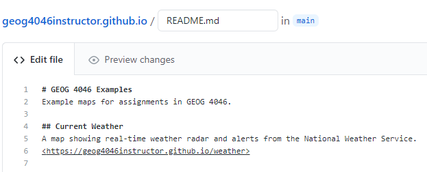
Your main repository page will then show the README with a link to the weather map.
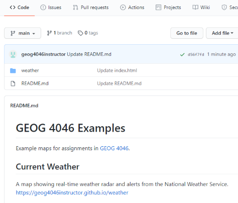
- A single
Checklist
- A working website hosted on Github
- A working map on the website
- A different basemap instead of OpenStreetMap
- Radar layer
- Alerts layer
- Symbology applied to alerts
- A new color applied to Extreme alerts
- Popup appears on alerts showing details
- README file on Github links to map
Submit
- A URL to your main repository page showing the README file with a link to your map. The URL you submit should look like
https://github.com/yourusername/yourusername.github.io
Appendix: Full code
HTML
<!DOCTYPE html>
<html lang="en">
<head>
<meta charset="utf-8">
<title>Instructor's Weather Map</title>
<link href="https://unpkg.com/leaflet@1.7.1/dist/leaflet.css" rel="stylesheet">
<link href="weather.css" rel="stylesheet">
</head>
<body>
<div id="map"></div>
<script src="https://unpkg.com/leaflet@1.7.1/dist/leaflet.js"></script>
<script src="https://code.jquery.com/jquery-3.6.0.min.js"></script>
<script src="weather.js"></script>
</body>
</html>
CSS
body {
padding: 0;
margin: 0;
}
html, body, #map {
height: 100%;
width: 100%;
}
JavaScript
// Create a new map centered on the continental US
var map = L.map('map').setView([38, -95], 4);
// Add OpenStreetMap to the map
var basemapUrl = 'https://{s}.tile.openstreetmap.org/{z}/{x}/{y}.png';
var basemap = L.tileLayer(basemapUrl).addTo(map);
// Add weather radar to the map
var radarUrl = 'https://mesonet.agron.iastate.edu/cgi-bin/wms/nexrad/n0r.cgi';
var radarDisplayOptions = {
layers: 'nexrad-n0r-900913',
format: 'image/png',
transparent: true
};
var radar = L.tileLayer.wms(radarUrl, radarDisplayOptions).addTo(map);
// Get GeoJSON data from the NWS weather alerts API
var weatherAlertsUrl = 'https://api.weather.gov/alerts/active?region_type=land';
$.getJSON(weatherAlertsUrl, function(data) {
L.geoJSON(data, {
// Color all alert polygons orange, but color Severe polygons red
style: function(feature){
var alertColor = 'orange';
if (feature.properties.severity === 'Severe') alertColor = 'red';
return { color: alertColor }
},
// Add a popup on each feature showing the NWS alert headline
onEachFeature: function(feature, layer) {
layer.bindPopup(feature.properties.headline);
}
}).addTo(map);
});